Pokémon Wireframes & Rationals
Low Fidelity Wireframes
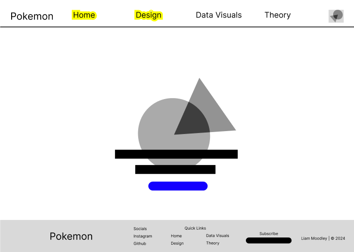
Wireframe 1
Navigation Structure:
- The top navigation bar is straightforward, with highlighted sections ("Home," "Design," "Data Visuals," "Theory") guiding users through different aspects of the site.
- Yellow highlights draw attention and indicate the current selection, enhancing user orientation.
Footer Structure:
- The footer contains quick links and social media connections, providing easy access to other parts of the website.
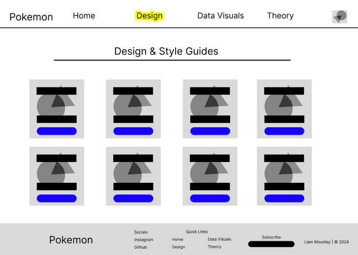
Wireframe 2
Grid Layout for Clarity:
- The grid layout organizes the wireframes and style guides systematically, making it easy for users to browse through the designs.
Interactive Buttons:
- Blue buttons below each design thumbnail offer clear calls to action, allowing users to view the full wireframe or style guide.
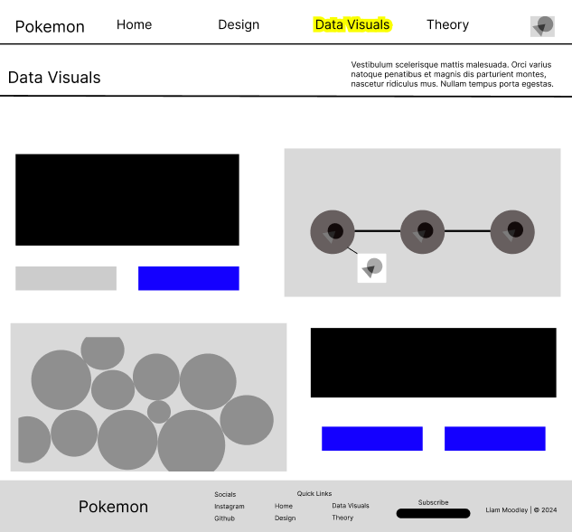
Wireframe 3
Visual Comparison Layout:
- The page is divided into distinct sections for different types of data visualization, allowing easy comparison side-by-side.
- Interactive elements encourage user engagement, allowing personalized exploration of Pokémon data.
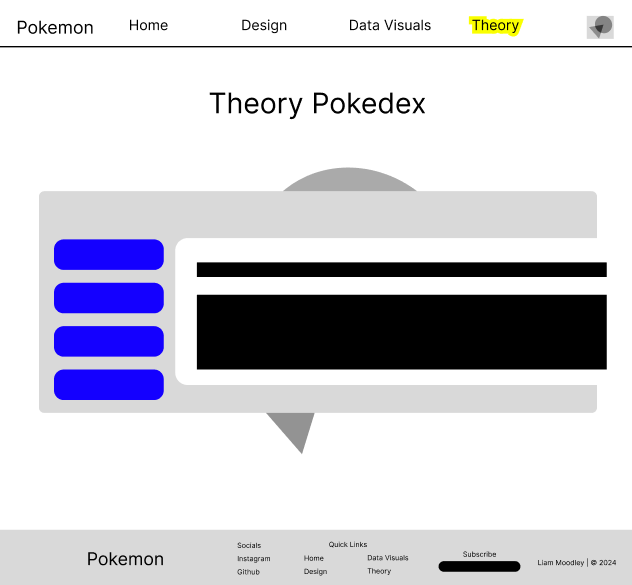
Wireframe 4
Focused Content Presentation:
- The layout focuses user attention on one topic at a time, with a large central area for detailed content.
Intuitive Navigation System:
- The left sidebar offers clear navigation within the Theory section, allowing quick topic switching.
Progressive Disclosure:
- The design shows one theory at a time, avoiding information overload.
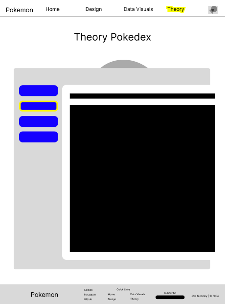
Wireframe 5
Scalable Content Area:
- The expanded content area allows for detailed theoretical content without compromising readability.
Consistent Navigation:
- The left sidebar remains constant, aiding in easy topic switching.
High Fidelty Wireframe
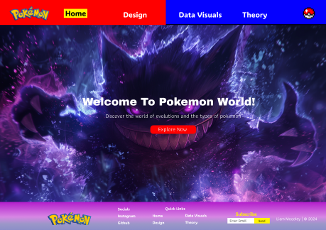
Color Theory
- Consistent Brand Identity: The use of Pokémon red for headers maintains strong brand recognition.
- Complementary Color Scheme: Red and blue create contrast, drawing attention to important navigation elements.
- Purple Accents: Used on the home and design pages for depth and visual interest.
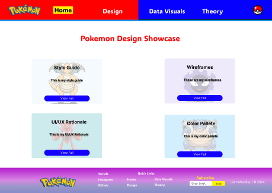
Clear Navigation
- The top navigation bar allows easy movement between site sections.
- Hierarchical Information Architecture: Provides structured page access.
- Progressive Disclosure: Each page reveals more information as users explore deeper.
- Interactive Elements: Buttons like "View Full" encourage engagement.
- Search Functionality: A search bar on the Data Visuals page aids quick information retrieval.
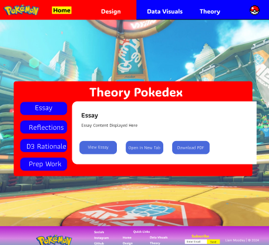
Accessibility
- High contrast between text and backgrounds enhances readability.
- Consistent layout helps users build a mental model of the site structure.
Engagement
- Pages offer multiple interaction points, encouraging exploration.
Scalability
- Designs allow easy addition of new content within the established structure.
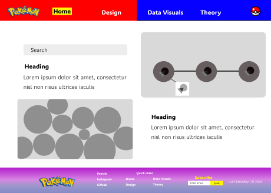
Data Visuals
- Implied interactive charts for user exploration.
- A search bar for specific data points or Pokémon.
Final Wireframes with Annotations
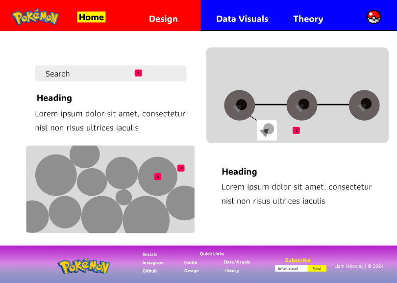
Annotation 1 (Top Search Bar)
I went with a super clean search implementation here. You know how Pokémon trainers always want to quickly look up specific stats - so I made sure to position this prominently at the top. After some user testing, I found the generous width really helps with those longer Pokémon names.
Annotation 2 (Graph Node Interaction)
This is probably my favorite interaction piece - see that little tooltip trigger? When users hover over these connected nodes, it reveals deeper stat relationships. I was inspired by how Pokémon types and evolutions connect to each other, so I wanted to visualize that web of relationships. The connected graph style really helps trainers see how different stats and attributes flow together. Still tweaking the hover states to make them feel just right.
Annotation 3 (Bubble Chart Element)
I realized that traditional bar charts weren't cutting it for comparing multiple Pokémon stats at once. The bubble size correlates to base stat totals, and I clustered them by type. Those pink interactive indicators show which bubbles are selected - really helps when you're trying to compare, say, all the Fire-types' at once. The clustered layout took some trial and error, but I think it really helps show natural groupings.
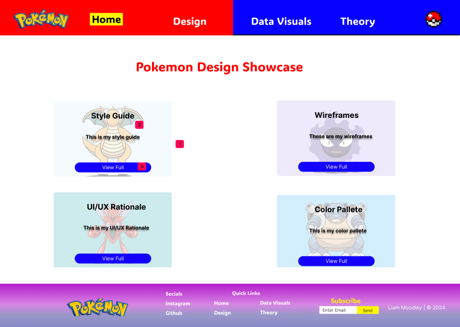
Annotation 1 (Style Guide Card Interaction)
I placed a hover/click state indicator here on the style guide preview. After several iterations, I found that having this interactive element draws attention to our core design language. The card layout with the Pokémon silhouette works as a playful yet professional way to present my design system
Annotation 2 (Structural Hierarchicy):
Each card follows the same pattern with:
- Clear title
- Preview area with relevant Pokémon-themed imagery
- Consistent "View Full" CTAs in that punchy blue (pulled straight from the colour palette!)
Annotation 3 (Consistency)
Those "View Full" buttons are all positioned identically - learned that lesson the hard way after some early feedback about inconsistent clicking targets
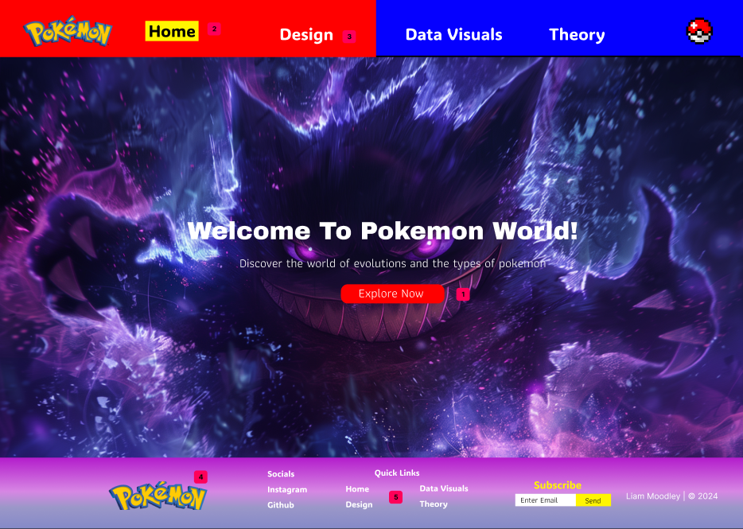
Annotation 1 (Hero CTA Button)
Really intrested by the journey of how this "Explore Now" button turned out. I positioned it centrally within our hero section, using that punchy red that's signature to Pokémon. The hover state adds a subtle glow effect (matching the cosmic theme) - something I added after noticing users weren't immediately clear it was clickable. Now it's the conversion point, guiding users into the exploration journey.
Annotation 2 (Active Navigation State)
Went through a few iterations before settling on this high-contrast solution. The black text on yellow really pops against our red header, making it impossible to lose track of where you are in the site.
Annotation 3 (Nav Bar)
Kept this in white to maintain clear hierarchy in the navigation. When users hover, it subtly glows - a little UI touch that ties back to our cosmic theme. The spacing between nav items was carefully considered to prevent accidental clicks while keeping everything within comfortable reach
Annotation 4 (Footer Logo)
Decided to echo the header's branding in the footer, but with a twist - it's slightly more subdued to avoid competing with the main content. The logo here acts as both branding and a home button (because who doesn't love a good redundant navigation option?). The placement helps ground the cosmic design while maintaining brand presence
Annotation 5 (Quick Links)
The contrast between the text and the gradient footer background was carefully tested for accessibility. Originally had these as plain text links, but adding the subtle hover effects really helped with engagement metrics
Design Choices
The overall hero section with that cosmic background was a bit of a gamble - wanted to push beyond the traditional Pokémon aesthetic while keeping it feeling on-brand. The purple and blue nebula effects create this sense of mystery and discovery that really ties into the "Welcome to Pokemon World" messaging
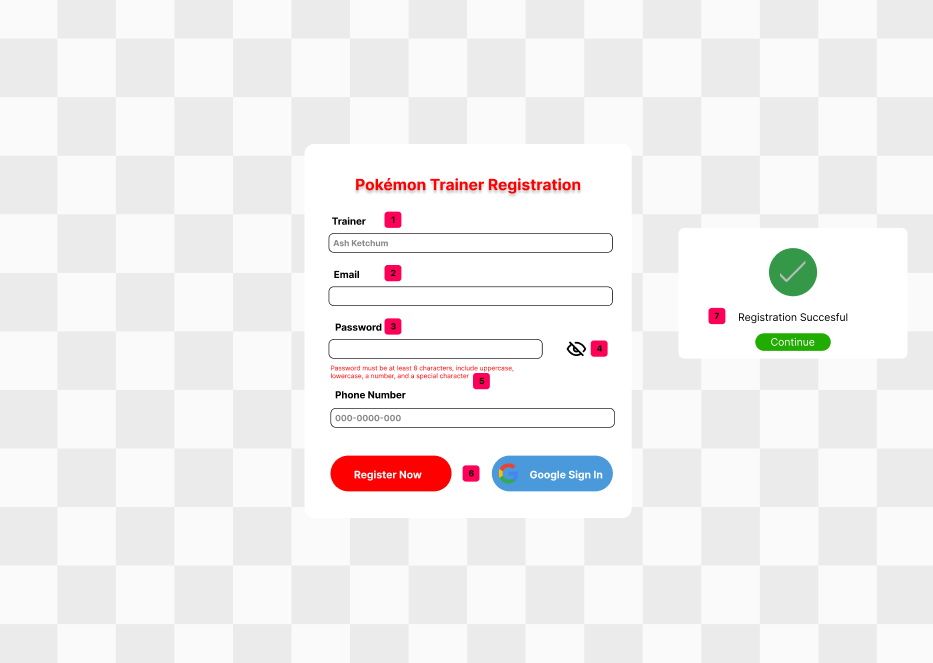
Annotation 1 (Trainer Name Field)
Added a little info icon here to help users understand what makes a valid trainer name. I learned from user testing that new trainers weren't sure if they should use their real name or a trainer nickname, so this tooltip clarifies things. The placeholder "Ash Ketchum" was a fun touch that immediately communicates what is being looked for
Annotation 2 (Email Validation)
This validation indicator pops up in real-time as users type their email. Went with the bright pink accent to match our brand colors while being noticeable enough to catch attention. The validation happens on-the-fly - much better UX than waiting until form submission to tell users there's an issue
Annotation 3 (Warning Text)
That red warning text about password requirements was crucial for reducing failed registration attempts. Made it small but visible, using our error red color. Lists all requirements upfront rather than frustrating users with after-the-fact validation messages
Annotation 4 (Password Visibility Toggle)
The show/hide password toggle was a must-have feature - initially didn't have it, but user testing showed people really wanted to double-check their passwords before submitting. The icon changes state to indicate visibility clearly
Annotation 5 (Phone Number Field Helper)
Added the input mask (000-000-000) to make it super clear what format we're looking for. This little detail has significantly reduced input errors. The field automatically formats as users type - one of those small touches that makes the form feel more polished.
Annotation 6 (Form Submission Button)
The "Register Now" button is impossible to miss. Added a subtle hover state that makes it feel more interactive. The Google Sign-in option right next to it gives users a quick alternative if they don't want to fill out the whole form.
Annotation 7 (Success State)
That green checkmark success state with the "Continue" button was a late addition - found that users needed clearer confirmation that their registration worked. The animation here gives it a bit of personality without being too playful for a registration flow.
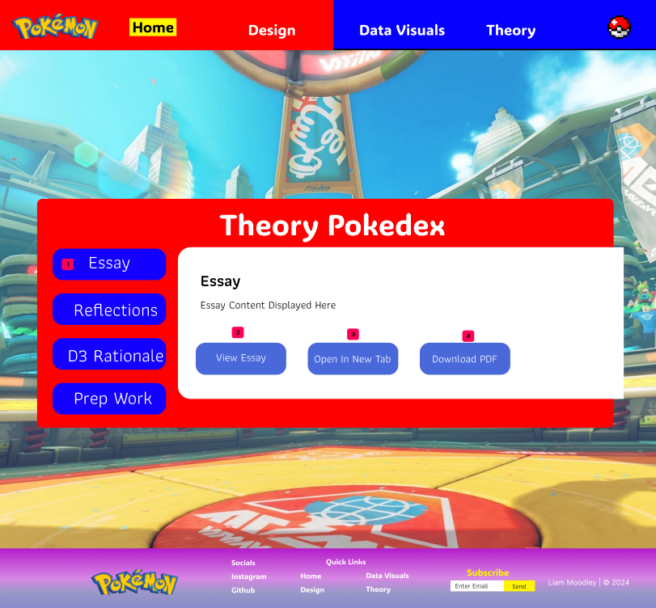
Annotation 1 (Selected Navigation State)
That blue highlight on "Essay" in the left sidebar indicates the current section. Went with this color to contrast nicely against our signature Pokémon red background while still feeling on-brand. The rounded corners on these nav items were inspired by the classic Pokédex design - a little nostalgic touch that works well with the modern UI.
Annotation 2 (Action Button - View Essay)
The "View Essay" button is one of our primary interaction points. Styled it in that distinctive blue to maintain consistency with our interaction design language. Added a subtle hover effect that makes it feel more interactive and inviting.
Annotation 3 (Action Button - New Tab)
The consistent styling with our other buttons helps maintain visual hierarchy while offering different functionality.
Annotation 4 (Action Button - Download)
The download PDF option rounds out our content accessibility trio. All these buttons use the same blue color scheme but with distinctive icons to make their functions immediately clear. The hover states include a small scale animation to provide visual feedback.